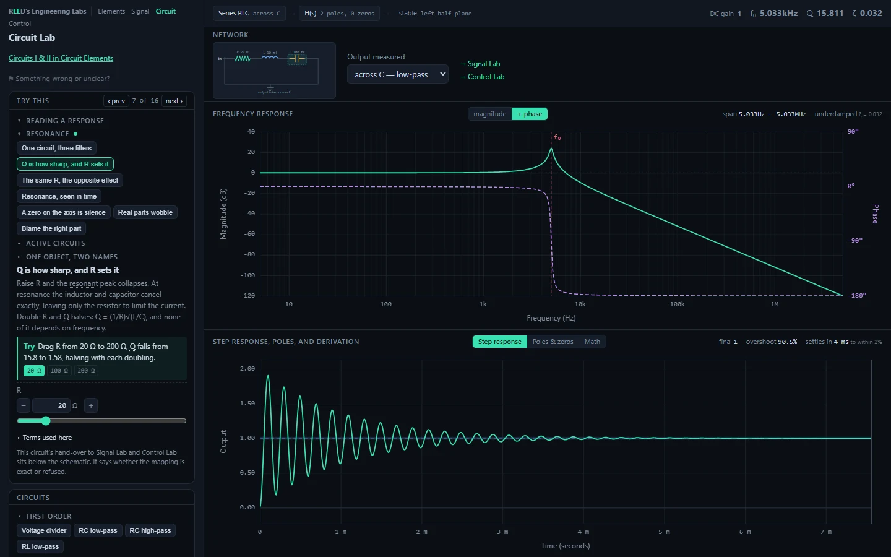
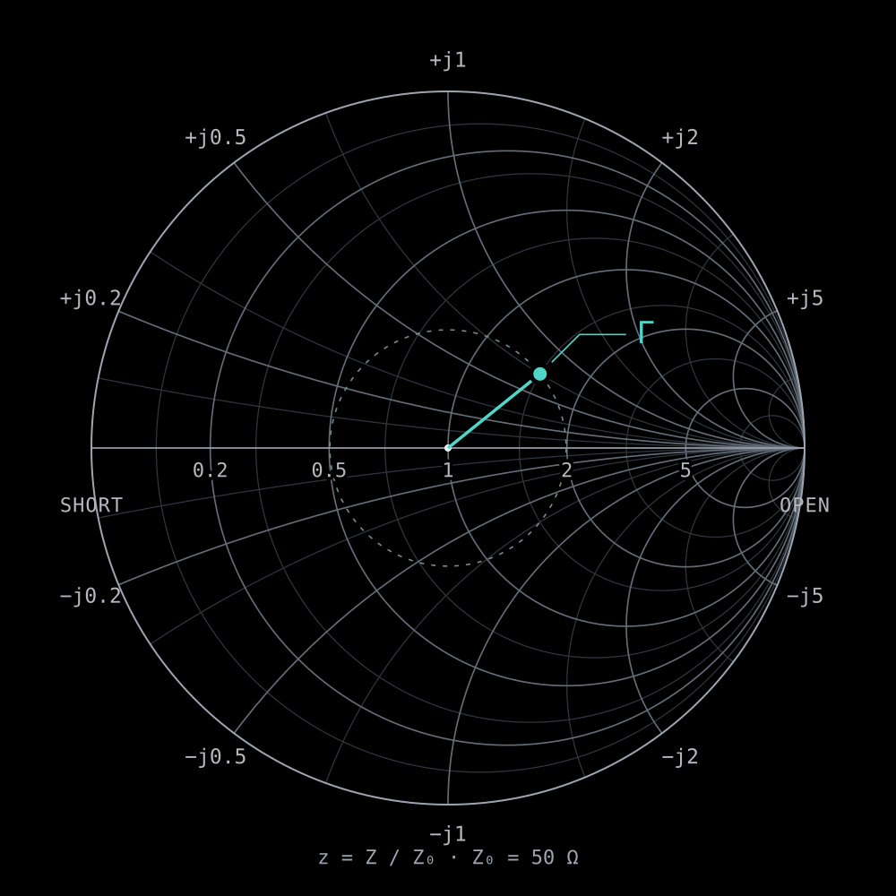
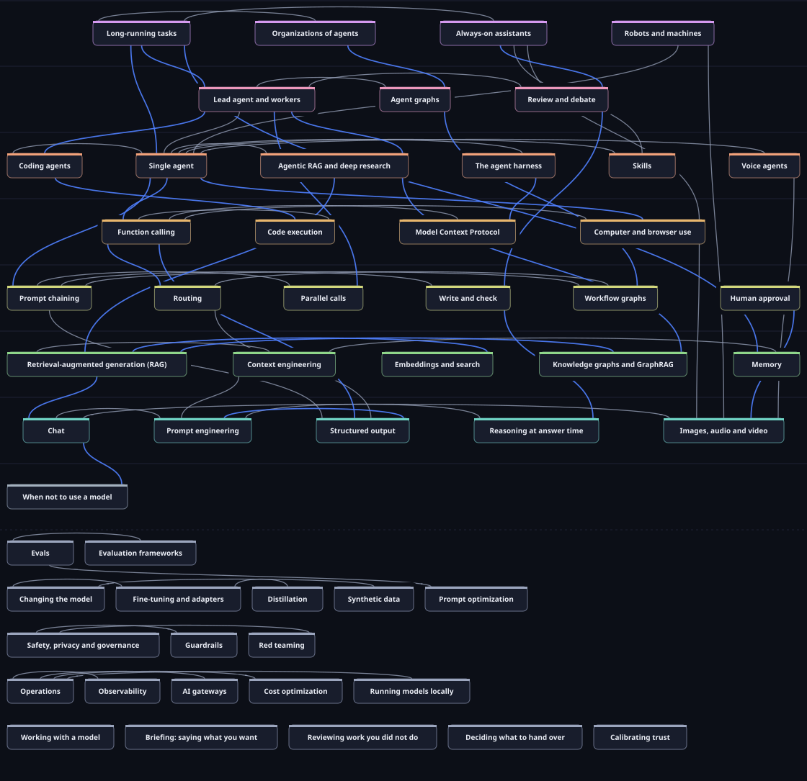

01 / Circuits & control
EE Labs
Four interactive labs. 153 experiments in circuits, signals, and control. Plots and numbers stay consistent; tests block a bad deploy. MIT licensed.


Southern California
Datacenter hardware engineer.
High-speed, RF & optical interconnect.
Open technical tools. Wildlife photography.
Explore the workMountains / Photograph by Reed
Public tools & references
01 / Circuits & control
Four interactive labs. 153 experiments in circuits, signals, and control. Plots and numbers stay consistent; tests block a bad deploy. MIT licensed.

02 / RF bench
Eight bench calculators for phone and tablet. The math uses your numbers. State stays in the URL.

03 / Language models
A guide to working with language models. 49 techniques, 8 levels, and 66 runnable examples, with measured local-30B results on selected pages. In progress.

04 / AI infrastructure
An evidence-graded ledger of the AI buildout, from energy and chips to models and apps. Sources include IEA, DOE, Epoch AI, BLS, and Census. Export to CSV or JSON.

05 / Photography workflow
Cull and catalog wildlife photos locally on Windows. Compare bursts, identify species with optional local or API tools, and keep a life list and map. Rejects stay on disk until you choose to delete them.

Wildlife
photography.
Birds, mammals, and time in the field.
View photographs Instagram
Reed Cameron Osaki

I’m Reed Cameron Osaki, a datacenter hardware engineer in Southern California. I work with high-speed, RF, and optical interconnect.
I build public tools for circuits, RF bench work, and understanding AI infrastructure. I photograph wildlife.
Full profile on LinkedIn